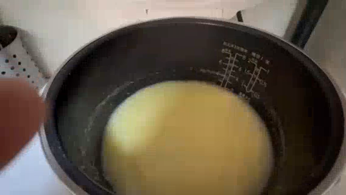
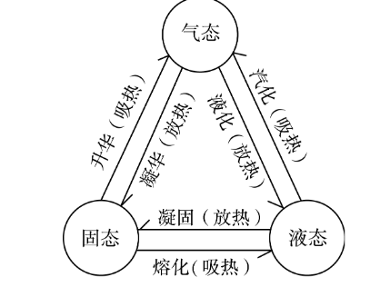
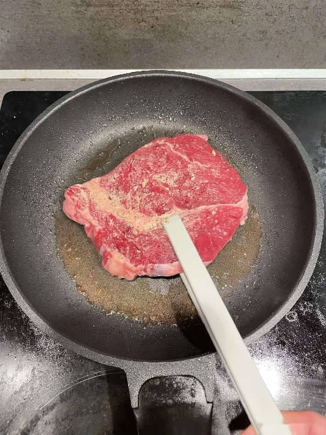
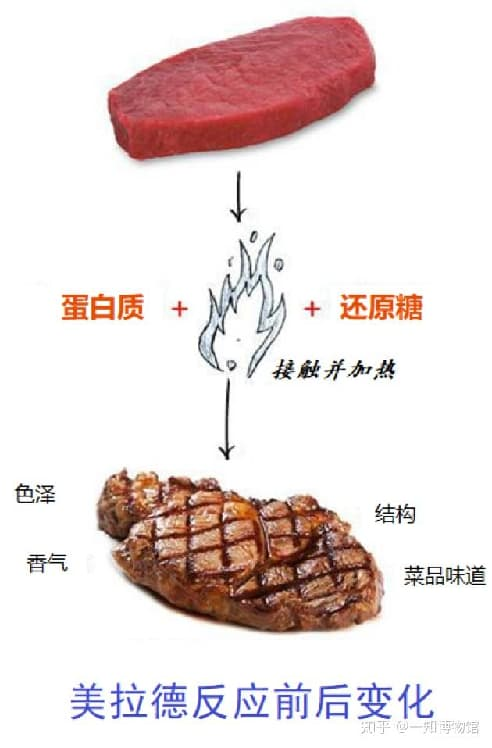
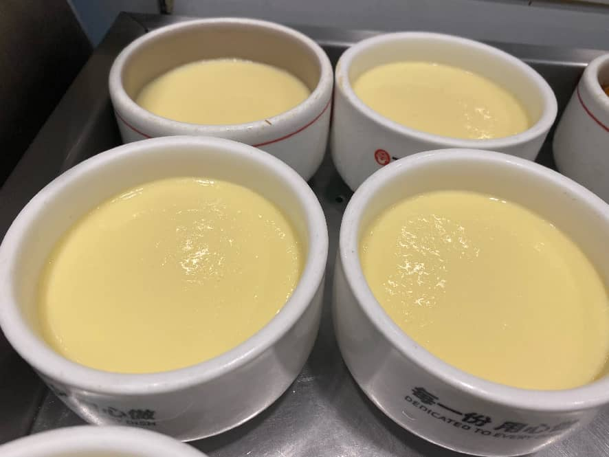
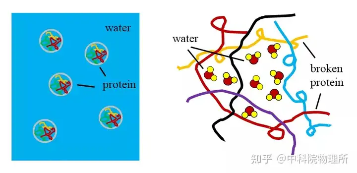

组员: 赖宸铭、潘梓铭、黄隆 | 初一(1)班

图1：厨房里随处可见的物态变化现象
想象一下,你走进厨房——这里简直是隐藏的“魔法实验室”!电饭煲打开时候的水气白花花的一片，沸腾的水咕噜咕噜向上冒热气，打开的冰淇淋慢慢变成液体，有没有想过,这些每天都在上演的奇妙现象,其实都是一场场精彩的物态变身秀? 今天,就让我们一起推开这扇科学之门,破解厨房里的物态变化密码吧!
物质三态相互转化关系

图2：物质三态变化示意图
视频1：电饭煲开盖时的液化现象
视频2：冰淇淋的熔化现象
在室温下，冰淇淋会慢慢塌陷，融化成粘稠的奶液。冰淇淋是一个复杂的混合物，其中包含冰晶、脂肪和空气。当环境温度高于它的熔点时，其中的冰晶吸收热量率先熔化，同时乳脂肪也开始软化，导致整体的固体结构崩塌，变成液态。这个例子很好地说明了混合物没有固定的熔点，但核心过程依然是吸热熔化。
视频3：水沸腾时的汽化现象
原理：物质从液态变为气态，这个过程叫做汽化(此处主要为沸腾形式，是一个剧烈的吸热过程)。
解析：锅底持续加热，使底部的水最先获得能量变成水蒸气，形成气泡。当水温达到沸点(标准大气压下为100°C)时，水内部和表面同时发生剧烈的汽化，气泡大量上升、破裂，将水蒸气释放到空气中，这就是我们看到的“白气”(其实是水蒸气遇冷液化成的小水滴)。这个过程需要持续吸收大量热量来维持。
应用：煮水沸腾，水吸热变为水蒸气，用于煮汤或蒸食物。
视频：液化现象
视频：融化现象

图3：煎牛排的美拉德反应与汽化现象

图4：美拉德反应原理简介
答案：“美拉德反应”与汽化的结合
煎炸时，高温让肉类表面的水分迅速汽化，为著名的“美拉德反应”(产生诱人香气和焦脆外壳)创造了完美的高温、无水环境。美拉德反应为：蛋白质 + 还原糖 接触并加热 → 改变色泽、结构，产生香气、提升菜品味道。

图5：嫩滑无蜂窝的蒸鸡蛋羹
答案：不是
原因是因为做鸡蛋羹是一个吸热过程，但是凝固是一个放热过程，很明显就不是凝固。那么问题来了，它又是为什么能成为“固态”的呢？

鸡蛋加热变成固体的过程是蛋白质受热变性的过程。
这是属于化学变化，是蛋白质的变性。首先熟鸡蛋算固体，但是其中含有蛋白质、水等多种物质，是混合物。 物态上常说的固态往往指某一种纯净物处于具有稳定形状的状态，其形状不会适应容器形状而改变，即不表现出流动性。 而对于混合物，往往其中某一部分会作为溶剂存在，而其他的物质看做是“溶于”溶剂中。 比如生鸡蛋是蛋白质为主的固态物质溶于水中，因此整体呈现液态，属于胶体。 而熟鸡蛋是液态的水穿插在蛋白质形成的固态网络中，因此更严格说是固态溶液。
回顾我们的探索，厨房里的每一个角落都在上演着物态变化的“魔术”：从固态到液态(熔化)的冰淇淋变身，从液态到气态(汽化)的烧开水、电饭煲冒出的“白气”…… 我们发现，这些看似平常的现象背后，都遵循着严谨的物理规律——吸热与放热。厨房，这个充满烟火气的地方，其实就是我们身边最生动、最美味的科学实验室。
下一次当你走进厨房，不妨用科学的眼光重新审视它。你会发现，科学从未远离生活，它正是生活本身最精妙的注解。
愿我们都能永葆一颗好奇的心，在生活的每一个角落，发现科学，感受奇妙！